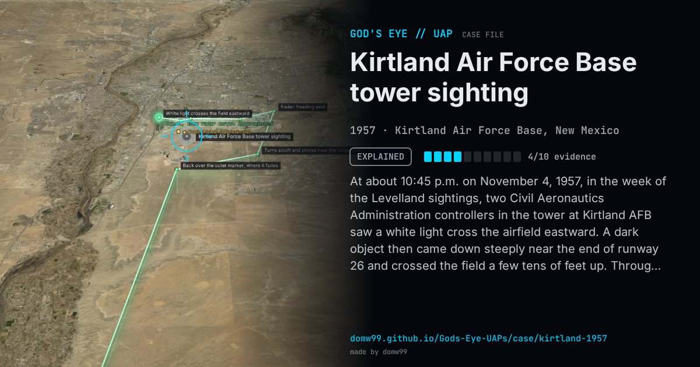

Kirtland Air Force Base tower sighting

At about 10:45 p.m. on November 4, 1957, in the week of the Levelland sightings, two Civil Aeronautics Administration controllers in the tower at Kirtland AFB saw a white light cross the airfield eastward. A dark object then came down steeply near the end of runway 26 and crossed the field a few tens of feet up. Through binoculars it looked egg-shaped, 15 to 20 feet tall, with one white light at its base. It hovered within 3,000 feet of the tower for up to a minute, moved east to the base boundary and climbed fast into the overcast. Albuquerque Radar Approach Control tracked a target that turned south, circled near the low-frequency range station, hovered over the outer marker, then followed a departing C-46 for about 14 miles before returning to the marker and fading. Radar contact lasted about 20 minutes.
Explanation
Capt. Shere of Ent AFB, who interviewed the controllers for Project Blue Book, found nothing a small private aircraft could not do and concluded that was what they saw; the radar returns matched a small plane. The Condon Report agreed, suggesting a pilot who had strayed onto the military field by mistake. The physicist James McDonald, who later spoke to the controllers, said they found the explanation amusing.
What was seen
Shape: Egg-shaped object, 15–20 ft tall, with a single white light at its base
Witnesses: CAA tower controllers R. M. Kaser and E. G. Brink
Duration: About a minute in view; about 20 minutes on radar